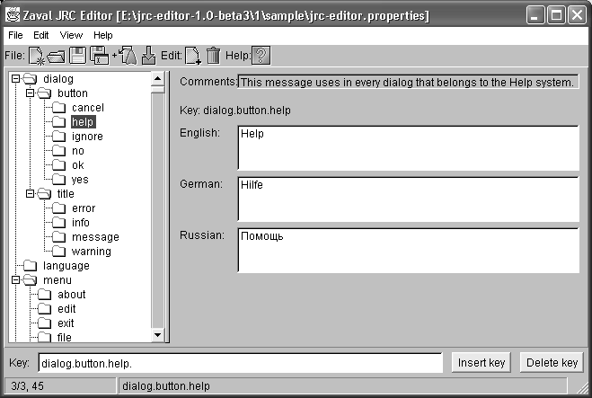
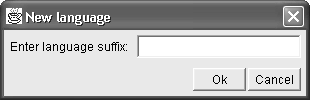
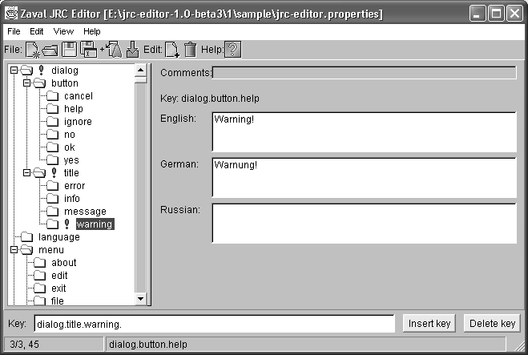

Zaval Creative Engineering Group
Introduction to the Zaval JRC Editor.
What Can You Do with the Zaval Java Resource Editor.
When To Use the Zaval Java Resource Editor.
Internationalization concept overview.
Installing the Zaval Java Resource Editor.
Importing resources from *.java files.
Resource stencil source code generation.
Since JDK 1.1.x. Sun introduced Internationalization concept for Java.
| Internationalization is the process of designing an application so that it can be adapted to various languages and regions without engineering changes. Localization is the process of adapting software for a specific region or language by adding locale-specific components and translating text. |
|
| The JavaTM Tutorial |
The text used in programs is locale dependent, that's why we store all text strings in the separate files as a key-value pairs. When we need to localize a program for yet another language support we have to translate values in these files to the desired language. And that's all! These files are called resources. We provide GUI tool to manipulate these resources. The files being produced by this tool is fully compatible with ResourceBundle expectations.
So, the Zaval JRC Editor (also known as Zaval Java Resource Editor) solution is small and easy-to-use visual editor for resource files.
The Zaval Java Resource Editor can be used for new and existing software localization, resources synchronization and any other resources manipulations.
It provides full support for any language specific resources (it depends on the fonts and font metrics settings of the host OS at your computer). The target of this tool is localization strings manipulation for all Java-based software that has appropriate support embedded.
The Zaval JRC Editor is best used for regular access to various resource files. You can add your own language support to the existing software if strings are not hard-coded to the software. One of the greatest things in the internationalization is that you don't need to make code changes.
Another great area in this tool usage is resource bundle synchronization. Our tool can handle this task easily - it compares the files set and highlights all differences. It allows separating development process and resource management process. That's why this tool can be used as part of your software pack to provide 3rd party localization.
Internationalization means that developers can customize their product for different languages and locales. In Java language terms this task handles by ResourceBundle class (see The JavaTM Tutorial). All resource files' names have two parts: resource name and localization suffix. When you want your program to 'speak' French, for example, the only thing you need to do is adding corresponding properties file. This procedure does not require any interaction with the software creator.
For more info on the localization see corresponding tutorial at http://java.sun.com.
We did our best to make the installation procedure of the product easy, so just follow the instructions.
To use the Zaval JRC Editor you need a JDK/JRE installed on your computer. All Sun's JDK (versions since 1.1.7) can be used without any problems. We suggest you to use Sun's JDK 1.2.2 or later as most stable (can be found at http://java.sun.com). Alternatively you can use any other vendors' JDK (IBM's were ok for versions 1.2.x, 1.3.x and 1.4).
set JAVA_HOME=
set PATH=%JAVA_HOME\jre\bin;%PATH%
set CLASSPATH=.;%JAVA_HOME%\jre\lib\rt.jar;%CLASSPATH%
The last line can have variation for old versions of JDK, such as 1.0.2 or 1.1.x.
set CLASSPATH=.;%JAVA_HOME%\jlib\classes.zip;%CLASSPATH%
When you complete the steps above the Zaval JRC Editor is ready to use.
To start this application you need simply start corresponding batch file. When the application is started you are able to manipulate resource files.
Zaval Java Resource Editor consists of two panels displayed on Screenshot 1. To start working with your resource set you should make several steps:
Note: the files previously opened will be closed automatically.
Left panel is a key hierarchy that was stripped out from the appropriate resource files set. The key hierarchy is created automatically using "." or "_" as a separator. So, adding "." in key name automatically creates new hierarchy level.
Right panel displays a list of the languages defined by the resource files set.
|  |
| Screenshot 1. Working area of the Zaval Java Resource Editor |
To hide a language from the right panel go through the following steps:
To edit key property for any language available do the following:
To apply changes use File -> Save from the top menu. Resource file's name consists of base name (e.g. 'editor'), language suffix (e.g. 'de'), and .properties extension, for example, editor_de.properties (German), editor_fr.properties (French). In our example jrc-editor.properties file contains default English messages and is displayed in the title of the Zaval Java Resource Editor's panel.
To save all files with a different base name and/or write them to a different directory, use File -> Save as instead.
There are several ways to create new resources: either enter them by hands, or importing them from *.java files. For more info see Importing resources from *.java files section.
To add your own items to the tree proceed through the following steps:
The remove a key-value pair do the following:
Caution: all sub-keys will be removed as well.
Note: removing items from the .properties file may cause application to fail. Think over before you proceed. Unused items will do no harm to the application stability.
Adding new language is simple:
|  |
| Screenshot 2. Adding new language |
An exclamation mark next to tree node notifies you that there is at list one item in this node that is not translated into all languages displayed in the right panel (see Screenshot 3).
|  |
| Screenshot 3. Resources synchronization |
When edit field next to a language is left empty, then it defaults to English language.
To simplify existing applications transfer to the resources usage you can use Parse source… feature. It goes through java sources, extracts text strings and builds tree-like structure based on class name/package name. Now you can import resources only from one file at a time and can't do iterations.
Importing process doesn't get all strings but only those that look right: for example, it wouldn't import any single character strings.
Stencil is a java source that contains all resource strings with their initialization and corresponding getters/setters. Initialization requires appropriate resource bundle.
To generate use File -> Generate source code….
There are several product limitations that can be fixed in future versions:
Current tool implementation follows the minimalist computing concept. In near future the following features will be added:
All support for software installation and problems should be sent directly to support@zaval.org with 'Re: Zaval JRC Editor Support' in subject line and plain text in the message body, describing your request and/or your problem. Since this software is distributed under the General Public License and is maintained by its authors on non-commercial basis, your request will be answered as soon as possible, but no later than 5 business days.
The Zaval Creative Engineering Group carries out its software customization/new software development on the regular basis. For more info contact us at info@zaval.org.
Now you can receive information on latest products' updates and hotfixes via email.
This is a low-traffic list (1-2 messages per month). To subscribe, send blank mail to news-subscribe@zaval.org.
For more information about the product, please contact Zaval CE Group directly in a free form. Please allow some time for reply.
Thank you,
The Zaval CE Group.
| Original idea: Victor Krapivin. Developed under Zaval Creative ProcessTM. |
| Copyright © Zaval Creative Engineering Group, 2000-2002. |
| Distributed under GPL v2. All Rights Reserved. |